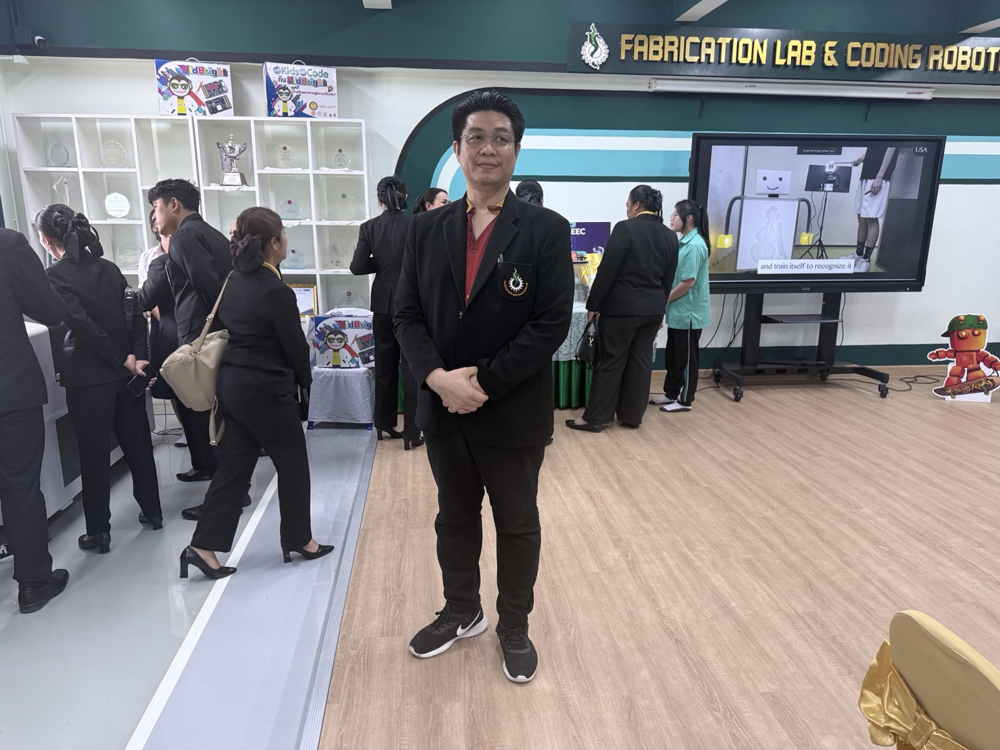

◉
Robotics & ROS
ออกแบบและพัฒนาระบบหุ่นยนต์ด้วย Robot Operating System ตั้งแต่การควบคุม การรับรู้ ไปจนถึงการทำงานอัตโนมัติ
ROSRobot ControlAutomation
Technology Teacher · Robotics Mentor
นายศิวัสว์ โตนอก Mr. Siwat Tonok
ครูผู้มุ่งพัฒนาผู้เรียนผ่านหุ่นยนต์ ปัญญาประดิษฐ์ และการเขียนโปรแกรม จากแนวคิดในห้องเรียนสู่ชิ้นงานที่ใช้งานได้จริง

01 — ABOUT
ผมเชื่อว่าการเรียนรู้เทคโนโลยีที่ดีที่สุด เกิดขึ้นเมื่อผู้เรียนได้คิด ออกแบบ ทดลอง และแก้ปัญหาด้วยตนเอง
ปัจจุบันดำรงตำแหน่งครู ณ โรงเรียนบ้านบึง “อุตสาหกรรมนุเคราะห์” สังกัดสำนักงานเขตพื้นที่การศึกษามัธยมศึกษาชลบุรี ระยอง รับผิดชอบการจัดการเรียนรู้ด้านวิทยาการหุ่นยนต์ ระบบปฏิบัติการหุ่นยนต์ การเขียนโปรแกรม วิทยาการคำนวณ และการออกแบบเทคโนโลยี
02 — EXPERTISE
บูรณาการฮาร์ดแวร์ ซอฟต์แวร์ และกระบวนการเรียนรู้ เพื่อเปลี่ยนโจทย์จริงให้เป็นนวัตกรรม
ออกแบบและพัฒนาระบบหุ่นยนต์ด้วย Robot Operating System ตั้งแต่การควบคุม การรับรู้ ไปจนถึงการทำงานอัตโนมัติ
เชื่อมต่อเซนเซอร์ อุปกรณ์ควบคุม และระบบเครือข่าย เพื่อสร้างต้นแบบอัจฉริยะที่ตอบโจทย์การใช้งานจริง
พัฒนาโปรแกรมและประยุกต์ใช้ AI เพื่อวิเคราะห์ข้อมูล สร้างระบบอัจฉริยะ และส่งเสริมทักษะการคิดเชิงคำนวณ
สร้างระบบเว็บและจัดการฐานข้อมูลสำหรับโครงงาน การเรียนรู้ และเครื่องมือดิจิทัลภายในสถานศึกษา
03 — TEACHING
Robotics
Robot Operating System
Introduction to Computer Programming
Computing Science I
Design and Technology I
04 — PORTFOLIO
พื้นที่รวบรวมโครงงาน นวัตกรรม การแข่งขัน และกิจกรรมการเรียนรู้ — พร้อมอัปเดตในเวอร์ชันถัดไป
05 — CONTACT
ยินดีแลกเปลี่ยนความรู้ด้านหุ่นยนต์ เทคโนโลยี และนวัตกรรมการศึกษา